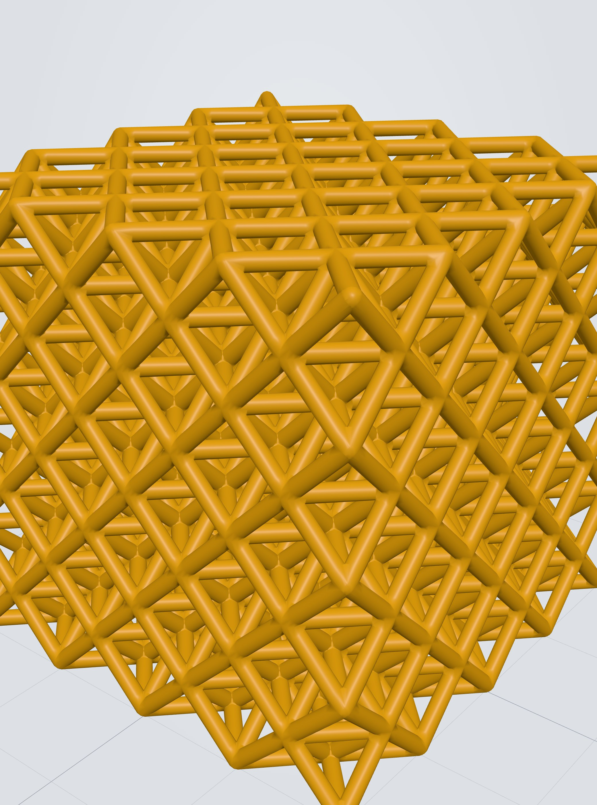
User manual for the Windows desktop app
This manual is for people who print lattices on a resin (DLP or LCD) printer and want STL or 3MF files without writing code. It explains every setting of the Lattice Generator desktop app, what the results mean, and what to do when something goes wrong. Chapter 3 gets you from zero to a saved STL file in a few minutes; the later chapters are for reference.
The screenshots show the app on Windows 11 with a 1 mm octet lattice unless stated otherwise. Numbers in the app follow your Windows region settings, so you may see a decimal comma (0,05) where this manual writes 0.05.
The same app also runs in a web browser. The browser version works the same way but has no Lighter mesh settings (section 6.4) and handles smaller blocks.
Lattice Generator and this manual are by Joaquin Ramirez-Rico, University of Seville (mates-lab.es).
A lattice is a solid made of one small cell repeated in three directions, like a crystal or a scaffold. Lattice Generator builds such a block from a few numbers (the cell type, the cell size, how dense it should be and how many cells) and saves it as an STL or 3MF file that any slicer can open. Solid plates can be added to the top and bottom, for example for compression tests.
It makes four kinds of shape:
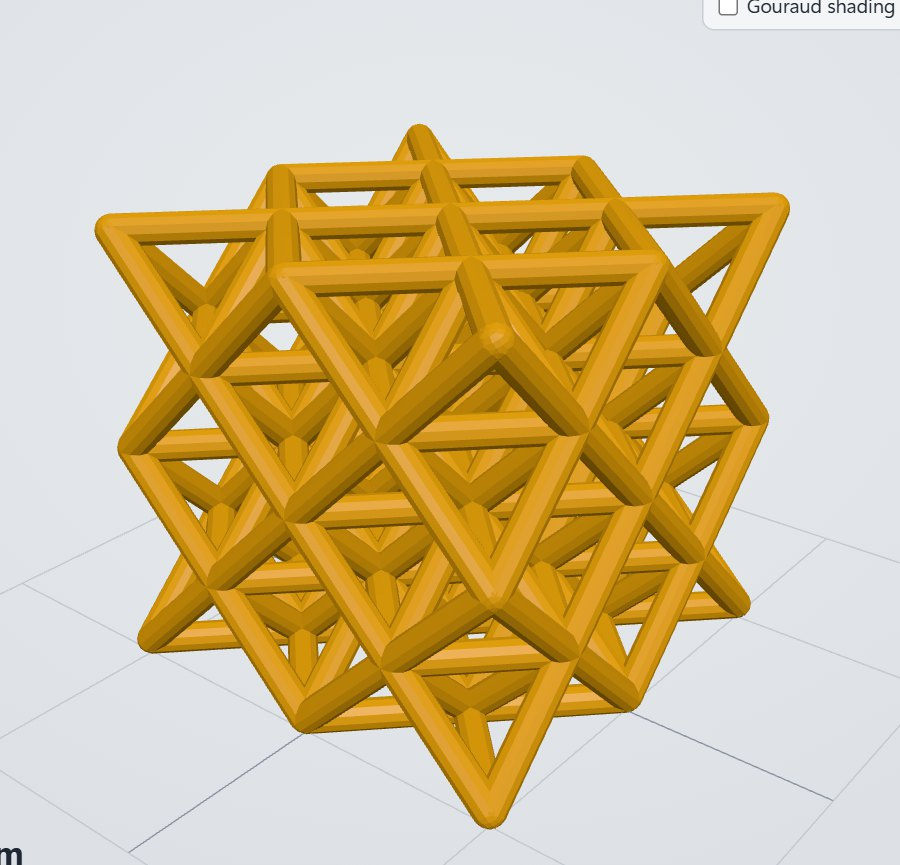
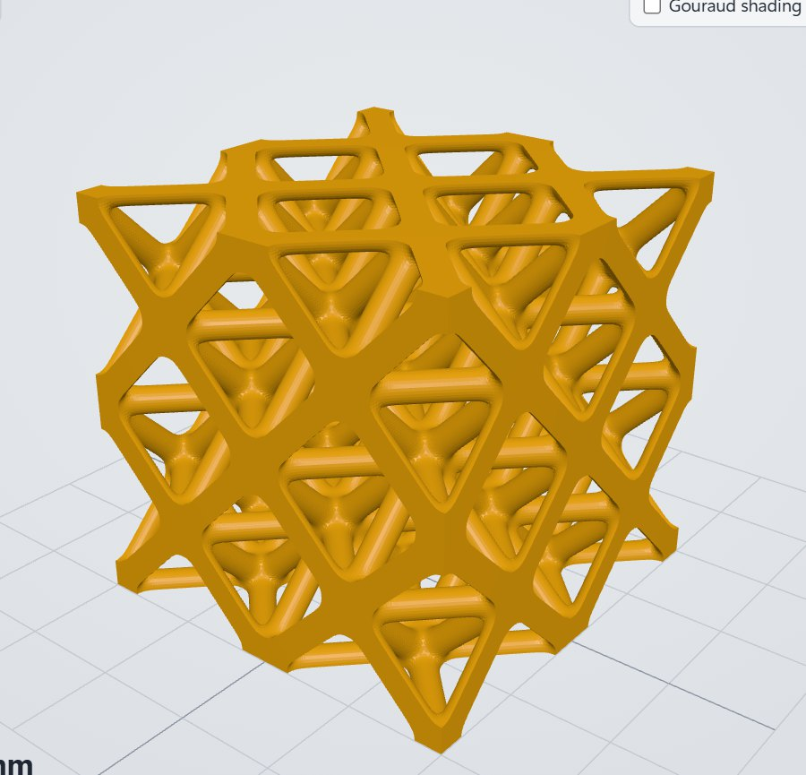
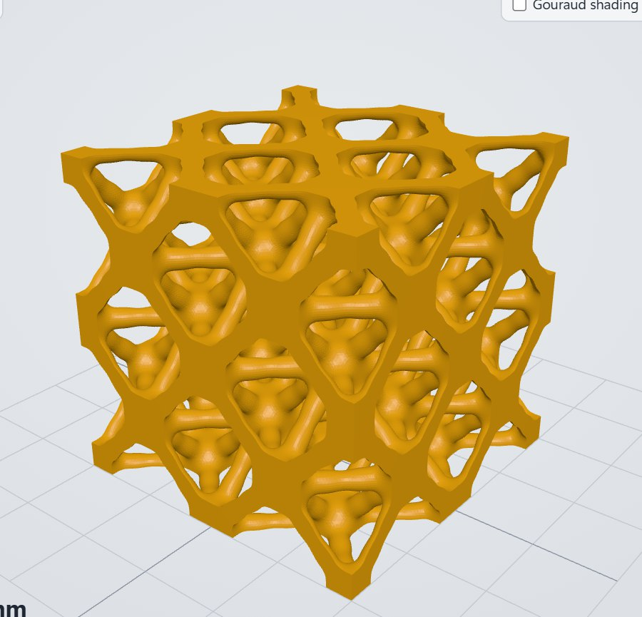
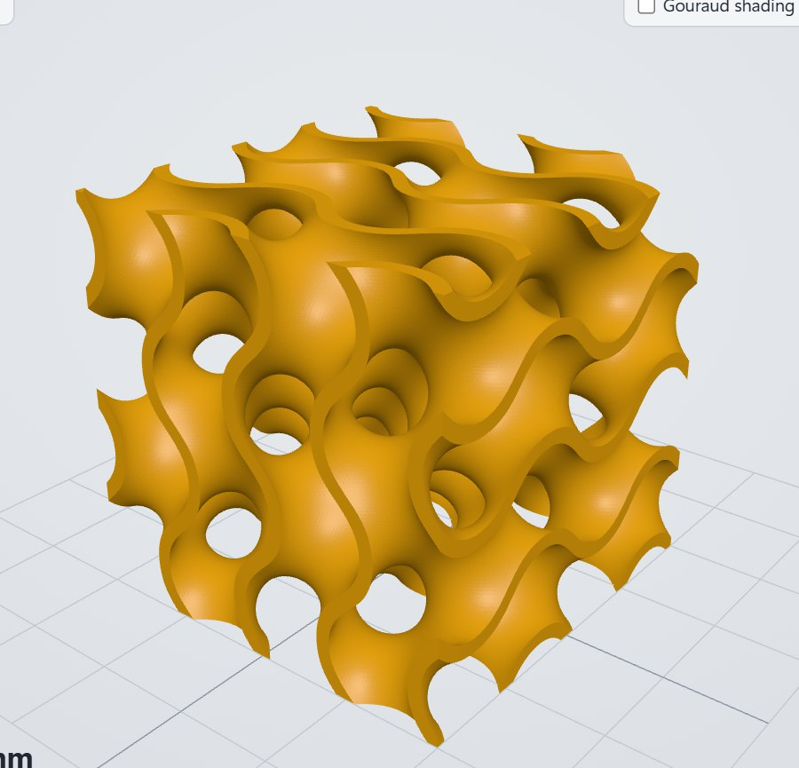
For each block the app also checks printability: whether the beams are thick enough for your printer's pixel, whether resin can drain out, whether any pieces float free, and how big the file will be.
Everything runs on your computer. The app needs no internet connection and sends nothing anywhere.
LatticeGenerator-win64-1.0.0.zip to your computer.LatticeGenerator folder and double-click
LatticeGenerator.exe. You can make a desktop shortcut to it
(right-click → Send to → Desktop).
Keep the exe inside its folder: it needs the files next to it.The app is not signed with a commercial certificate, so the first time Windows may show Windows protected your PC. Click More info, then Run anyway. Windows remembers this choice.
The window opens after a few seconds. The status line at the top of the 3D view shows Ready when the engine has started, and the Generate button becomes active.
If a message says the app is running in your web browser. On a few computers the app window cannot open (for example when WebView2 has been removed). The app then opens in your default web browser instead and shows a small message box. Work in the browser as usual, and keep the message box open: clicking OK quits the app.
Close the window. Temporary files are deleted automatically; any left behind by a crash are removed on a later start.
Delete the LatticeGenerator folder. The app writes nothing else
to your computer apart from the STL files you save and its remembered
settings.
This builds a 3 × 3 × 3 block of 1 mm octet cells, 20 % solid, which prints in a few minutes on most resin printers. These are the settings the app starts with, so you only have to press two buttons.
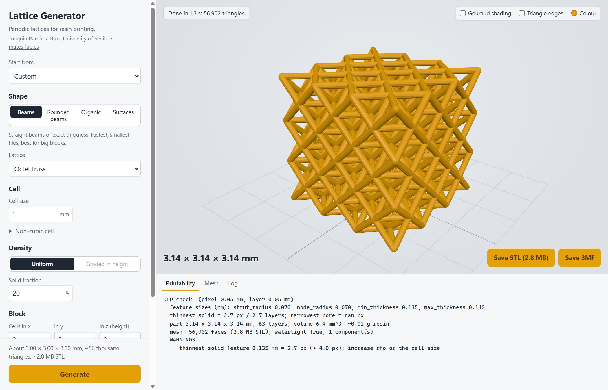
The block measures 3.14 mm rather than 3.00 mm: with Beams, the joints on the outer faces are complete, so the block is one beam thickness larger than the number of cells times the cell size.
The window has four areas (figure 3.1):
The app remembers your settings and view choices between sessions. To go back to the defaults, pick a preset in Start from, or change the values by hand.
The Start from list fills in a complete set of settings for a common job. Change anything afterwards; the list then shows Custom again.
| Preset | What it sets |
|---|---|
| 1 mm octet beams, 20 % dense, 20 × 20 × 20 | A 2 cm cube of octet beams with hexagonal beams: about 10 million triangles and a 500 MB file. Builds in about 5 seconds. |
| Gyroid sheet, 2 mm cells, 25 % dense | Surfaces, gyroid, thin sheet, 2 × 2 × 2 cells. |
| Graded bcc, 15 % at the bottom to 40 % at the top | Rounded beams, bcc, 2 mm cells, 2 × 2 × 4 cells, density rising with height. |
| Octet with rounded joints, 2 mm cells | Rounded beams, octet, 30 %, 2 × 2 × 2 cells. |
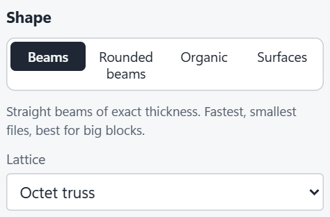
Choose how the lattice is built. A one-line hint under the buttons describes each choice.
With Beams, Rounded beams and Organic, the Lattice list offers nine arrangements of beams. Connectivity is the number of beams that meet at a joint: lattices with 12 or more are stiff (their beams are stretched or compressed), those with fewer are softer (their beams bend).
| Lattice | Beams per cell | Connectivity | Description |
|---|---|---|---|
| Simple cubic | 3 | 6 | The cell edges. Has horizontal beams, which sag in printing. |
| Body-centred cubic (bcc) | 8 | 8 | Corners to the cell centre. |
| Face-centred cubic (fcc) | 12 | 12 / 4 | Corners to the face centres. |
| bcc with vertical posts | 9 | 10 | bcc plus vertical beams on the cell edges: stiffer along the build direction. |
| fcc with vertical posts | 13 | 14 | fcc plus vertical beams on the cell edges. |
| fcc and bcc combined | 20 | 20 | Both together. |
| Octet truss | 24 | 12 | The classic stiff, light truss. A good default. |
| Diamond | 16 | 4 | The bonds of a diamond crystal. Soft and open. |
| Kelvin foam cell | 24 | 4 | The edges of packed truncated octahedra, like an ideal foam. |
With Surfaces, the list is called Surface and offers the gyroid, Schwarz P, Schwarz D, Schoen I-WP, Neovius, Lidinoid, Fischer–Koch S and Split P. Tick Thin sheet instead of solid channels to make a wall of even thickness that follows the surface, with both sides open; without it, one side of the surface is filled solid.
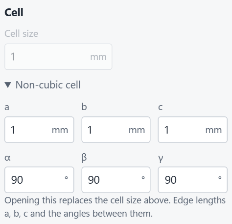
Cell size is the edge length of one cubic cell in millimetres. Smaller cells give a finer lattice but thinner beams at the same density.
Open Non-cubic cell to use a box or slanted cell: edge lengths a, b, c along x, y and z, and the angles α (between b and c), β (between a and c) and γ (between a and b), each between 30° and 150°. While it is open, these values replace the cell size. A tall cell (c larger than a and b), for example, stretches the lattice along the build direction.
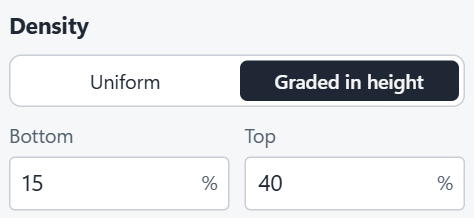
Solid fraction is the share of the block's volume that is resin, from 1 to 90 %. It sets the beam thickness (or wall thickness for Surfaces). Mechanical stiffness and weight grow with it.
Graded in height makes the density change smoothly from the Bottom value to the Top value. The lattice keeps its layout; only the thickness changes. Grading is not available with Beams, nor when repeating one cell (section 6.4); the option is greyed out then.
The highest density depends on the lattice: beyond it, beams that do not share a joint would run into each other. With Beams, an octet reaches 83 %; fcc and bcc combined reaches about 60 %. The app tells you if you ask for more.
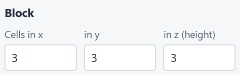
The number of cells along x, y and z (height), from 1 to 200 each. The block size is the number of cells times the cell size. With Beams, the block is about one beam thickness larger, because the joints on the outer faces are complete.
z is the build direction: the block is built bottom-up, with its in z cells stacked in printed layers.
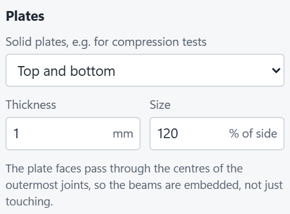
Solid plates on the Bottom, the Top, or Top and bottom of the block, for example as flat loading faces for compression tests. None (the default) adds nothing.
Thickness is in millimetres. Size is the length of each plate side as a percentage of the block side, from 100 % (the plate matches the block) to 200 %; the default, 120 %, overhangs the block by 10 % on every side. The plate is centred under (or over) the block.
The plates are joined to the lattice, so the saved file holds a single solid object. With Beams, the outermost joints stick out past the cells by half a beam; a plate placed below them would only touch each joint at one point. So the plate faces pass through the centres of those joints instead, and the joints and the beams lying in that plane are half embedded in the plate. With the other shapes the block ends in flat faces, and the plates are placed against them. The estimate and the block size include the plates; the solid fraction in the reports is that of the lattice alone.
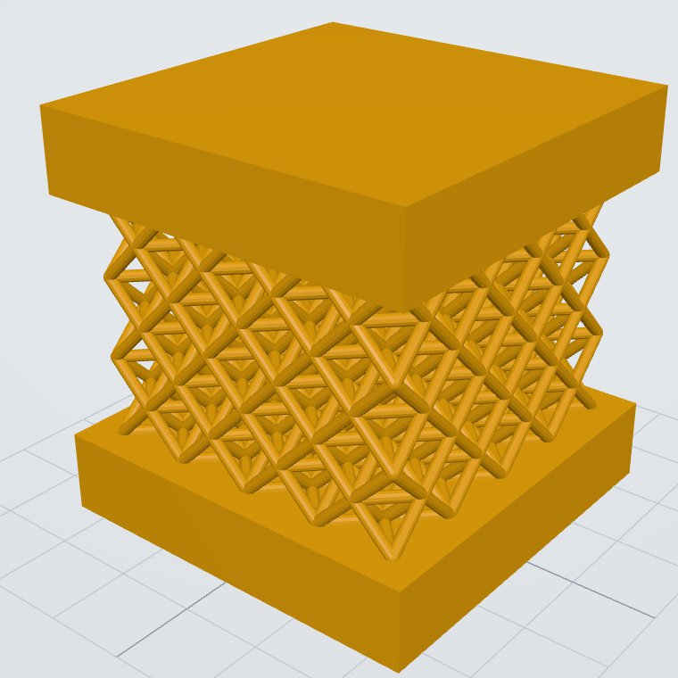
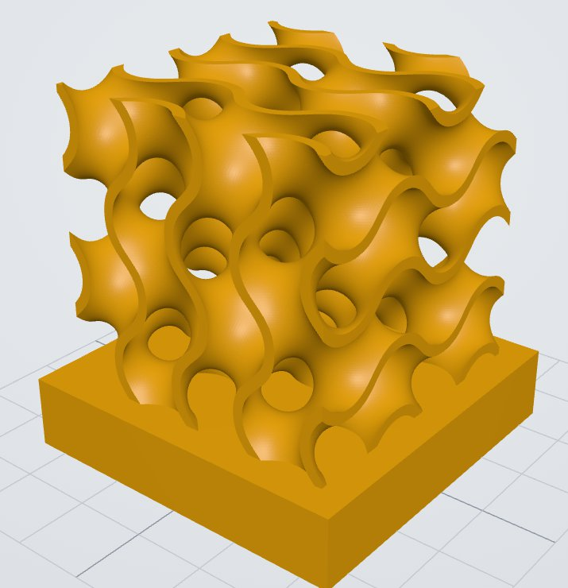
For non-cubic cells with angles other than 90°, the plates follow the slanted footprint of the block (a parallelogram).
Click More settings to open the section. The settings shown depend on the shape.
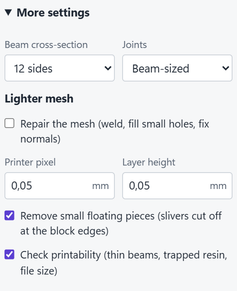
Beam cross-section is the polygon of each beam: 6, 8, 12 or 16 sides. More sides look rounder and cost more triangles. 12 sides (the default) looks round at any practical size; 6 sides halves the file size for very large blocks.
Joints sets the shape where beams meet:
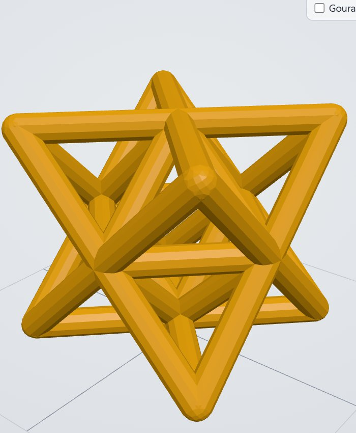
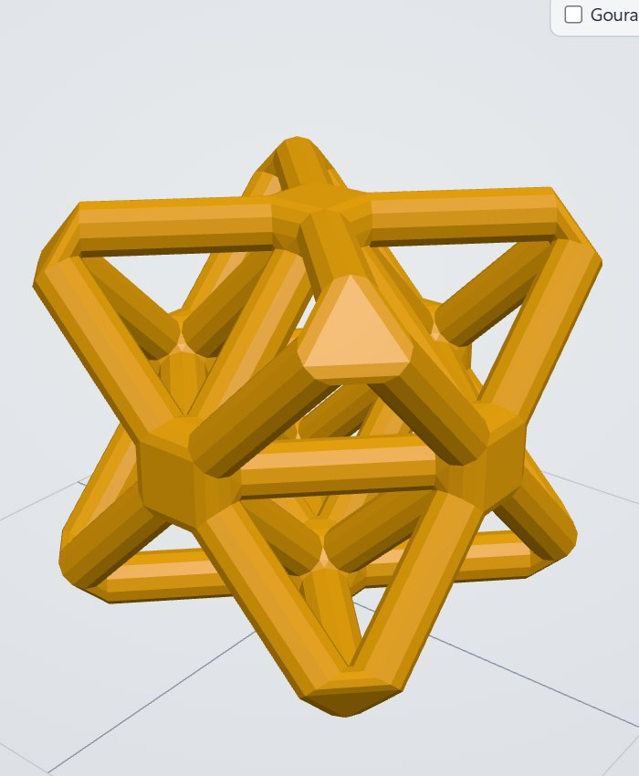
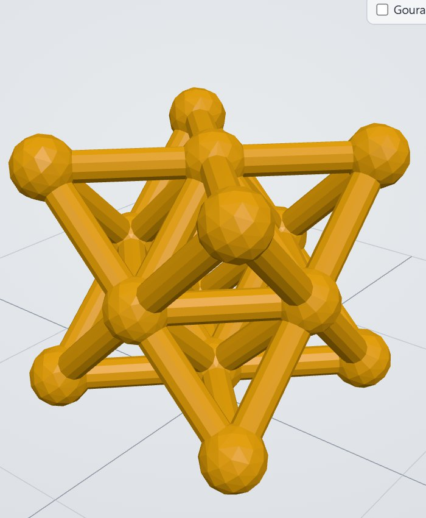
Figure 6.1 One octet cell, 1 mm, 20 %, 12 sides, with each joint type.
Joint rounding is the size of the fillet at the joints, as a percentage of the cell size (default 2 %). 0 gives sharp joints. Larger values make the joints visibly thicker very quickly; keep it between 1 and 3 % if the beams should look even.
Organic beams naturally swell where they meet. Joint slimming, from 0 (off, the default) to 1, takes material away from the joints. 0.5 makes the joints about as thick as with sharp Rounded beams. Values above about 0.6 can pinch the joints, and at low densities strong slimming can break small pieces off: check the Printability tab.
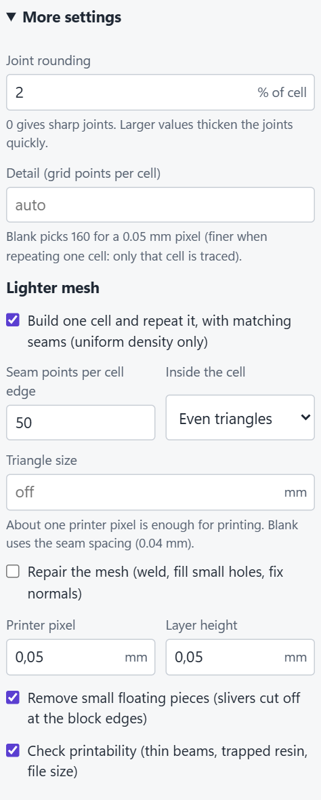
Rounded beams, Organic and Surfaces are traced from a 3D grid over one cell. Detail (grid points per cell) is the number of grid points along a cell edge. Leave it blank: the app picks enough detail for your printer pixel (half a pixel per grid step, at least 80; a quarter pixel when repeating one cell). The hint under the field shows the value it will use. More detail means finer surfaces, much bigger files and longer runs.
Traced meshes have many tiny triangles, far smaller than your printer can resolve. The Lighter mesh settings make files smaller without visible change.
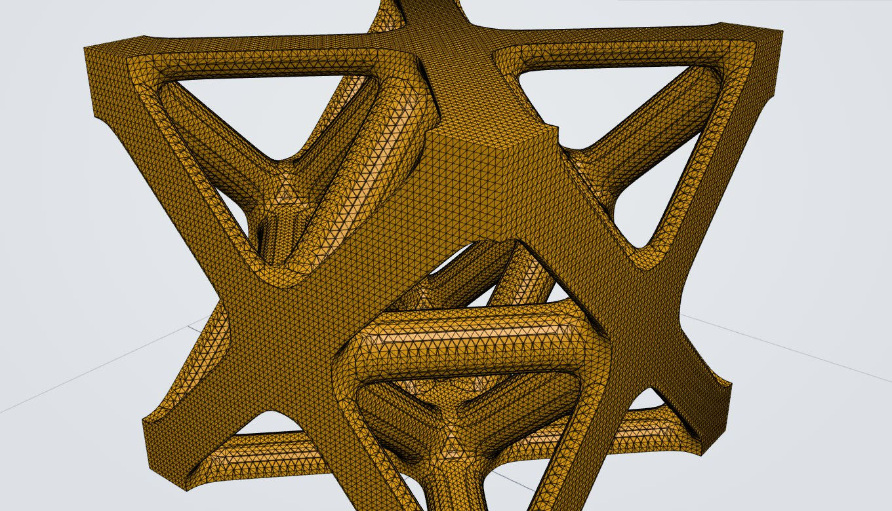
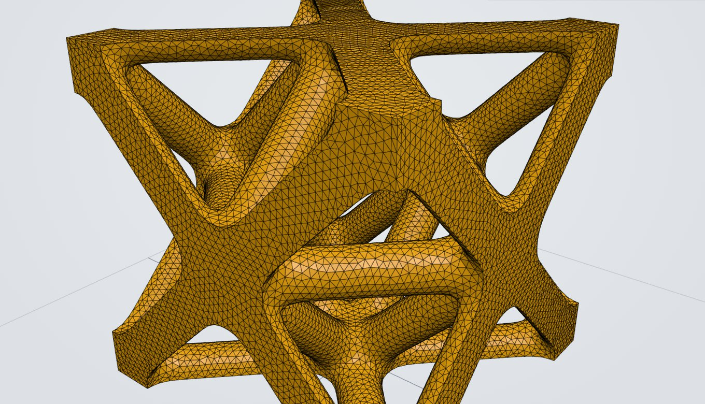
Above the Generate button, the app estimates the block size, the number of triangles and the STL file size as you change the settings. Use it to stay within what your slicer handles: many slicers slow down above a few million triangles. When a Lighter mesh option is on, the estimate is for the mesh before simplification, so the final file is smaller.
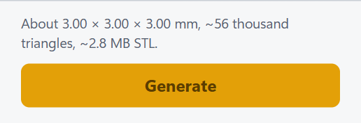
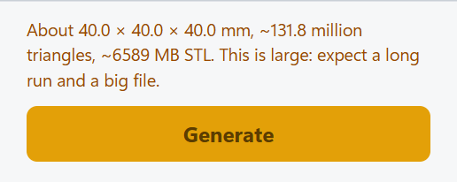
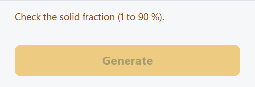
If a value is out of range, the estimate names the field to check (for example Check the solid fraction (1 to 90 %)), the field gets a red border, and Generate stays disabled until it is fixed.
Press Generate. The status line counts the seconds, and the Log tab shows the steps as they happen. Typical times on a recent laptop:
| Job | Triangles | Time |
|---|---|---|
| Octet beams, 1 mm, 3 × 3 × 3, 12 sides | 57 thousand | 1 s |
| Octet beams, 1 mm, 20 × 20 × 20, 6 sides | 10 million | 5 s |
| Rounded octet, 2 mm, 2 × 2 × 2 | 0.9 million | 5 s |
| Rounded octet, 1 mm, 3 × 3 × 3, one cell repeated | 0.9 million | 15 s |
For a very large block the app asks for confirmation first. Press Cancel at any time to stop a run; the app is ready again immediately.
| Action | Mouse |
|---|---|
| Turn | Drag with the left button |
| Zoom | Turn the wheel, or drag with the middle button |
| Move sideways | Drag with the right button |
The block sits on the build plate, centred, with z pointing up. Grid squares are 1 mm, or 5 mm under large blocks. After each run the view is reset to show the whole block.
Very large meshes (above 3 million triangles) are shown as a 3 × 3 × 3 corner of the block so that the view stays responsive; the status line says so. The saved file always contains the whole block.
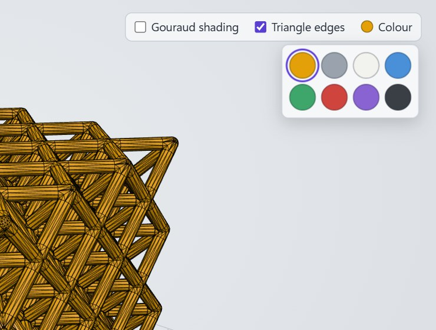
The bar at the top right of the view changes only how the block is drawn, never the file.
These choices are remembered.
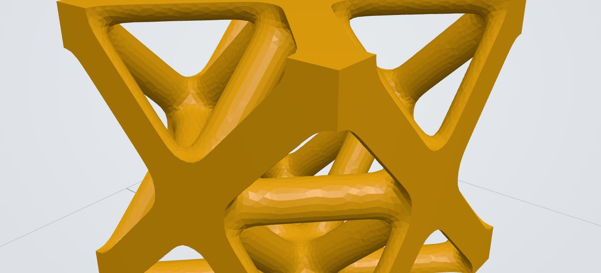
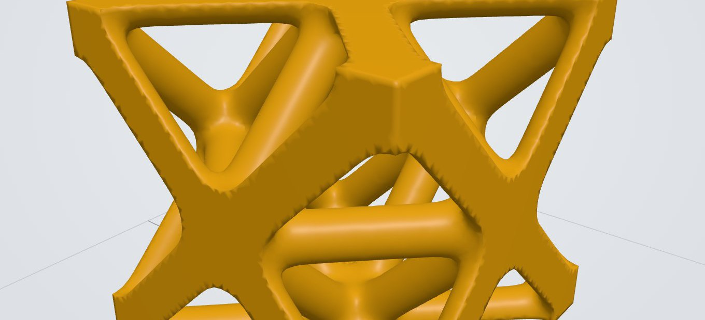
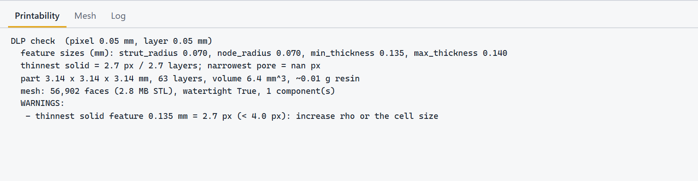
The report lists, in millimetres:
strut_radius is the beam radius, node_radius the
joint radius, min_thickness the thinnest solid anywhere. For
Surfaces and traced shapes it also gives pore_radius (the largest
open space) and pore_throat (the narrowest passage).nan.Below that come warnings, each with a suggestion:
| Warning | What to do |
|---|---|
| thinnest solid feature … (< 4.0 px) | Beams or walls under 4 pixels may not cure or may break when washing. Raise the solid fraction or the cell size. |
| narrowest pore throat … | Uncured resin will be hard to wash out. Lower the density, use larger cells, or use a thin-sheet surface. |
| enclosed void pocket(s) | Closed cavities would trap resin. Change the density or lattice. |
| isolated solid piece(s), or several components | Parts of the lattice are not connected and would float in the vat. Raise the density, or keep Remove small floating pieces on. |
| more than 5 M faces | Many slicers become slow. Use Beams with fewer sides, fewer cells, or a Lighter mesh option. |
When everything is fine, the report ends with no problems found.
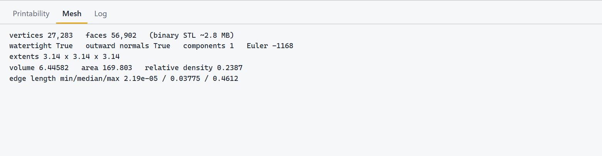
The Log tab records every step of the last run, with timings. When something fails, the details are there; include them if you ask for help.
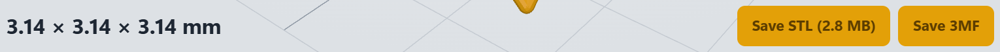
Press Save STL; the button shows the file size. A
Windows Save as dialog opens with a suggested name such
as octet_3x3x3.stl. The file is a binary STL in millimetres, ready
for any slicer. Large files take a moment to copy.
Save 3MF saves the same mesh as a 3MF file
(octet_3x3x3.3mf): one object, in millimetres, compressed to about a
fifth of the STL's size. The 3MF is written after you pick the file name, without
generating again; for very large blocks this takes up to a minute, and the status
line says Writing the 3MF file… meanwhile.
Lay the block flat on the build plate in your slicer: its bottom face is exactly flat. Lattices are largely self-supporting, so a small block often prints without supports on a raft or directly on the plate; follow your printer's practice for larger parts.
Beams, Octet truss, cell 1 mm, solid fraction 20 %, 20 × 20 × 20 cells. In More settings, choose 6 sides if your slicer struggles with the 14 million triangles (700 MB) of 12 sides. Check that the thinnest solid is at least 4 pixels. For compression tests, add plates on the top and bottom (section 5.5), e.g. 1 mm thick at 120 %, and save as 3MF for a smaller file.
If the Printability tab warns about thin beams, raise the solid fraction (beams thicken roughly with its square root) or the cell size (beams scale with it). For a 0.05 mm pixel, 4 pixels is 0.2 mm: a 1 mm octet reaches that at about 40 %, a 1.5 mm octet at about 20 %.
Rounded beams, Octet truss, cell 2 mm, 30 %, 3 × 3 × 3. In More settings, tick Build one cell and repeat it and keep 50 seam points. The file comes out several times smaller than without it.
Start from the preset Graded bcc, or choose Rounded beams, then Graded in height with, for example, 15 % at the bottom and 40 % at the top. If the file is too big, give a Triangle size of one printer pixel.
Surfaces, Gyroid, tick Thin sheet, cell 2 mm, 20 to 30 %. Both sides of the wall are open channels, so resin drains from everywhere.
Open Non-cubic cell and set a = b = 1, c = 1.5, with all angles 90°. Beams become steeper, which helps printing and makes the lattice stiffer along z.
| Problem | Solution |
|---|---|
| “Windows protected your PC” when starting | Click More info, then Run anyway (chapter 2). This appears because the app has no paid code-signing certificate. |
| The app opens in a web browser with a message box | The app window could not open on this computer. Use the browser; keep the message box open while you work. If you need the window, ask IT whether Microsoft Edge WebView2 Runtime is installed. |
| Nothing happens when starting, or the window closes at once | Make sure you extracted the whole zip and run LatticeGenerator.exe from inside its folder. Then run the self-test (below). |
| Generate stays grey | The estimate line names the field to fix. While the app starts, Generate is grey until the status says Ready. |
| “Could not build the lattice: rho=… is not reachable” | The density is higher than the lattice allows with Beams: beams would run into each other. Lower the solid fraction, or use Rounded beams. |
| “The computer ran out of memory” | Use fewer cells, less detail, Beams, or Build one cell and repeat it. |
| A run takes very long | Look at the estimate before generating. Traced shapes grow with the cube of the block size; Beams are much faster. Press Cancel and reduce the block. |
| Thin beams warning | Raise the solid fraction or the cell size (chapter 10). |
| Several pieces, or floating pieces | Raise the density; keep Remove small floating pieces on. Organic with strong joint slimming at low density can break apart: set slimming to 0. |
| The slicer is slow or crashes | Reduce the triangle count: Beams with 6 sides or Hull joints, fewer cells, or a Lighter mesh option with a triangle size of one pixel. |
If the app misbehaves on a particular computer, run its self-test. Open the
LatticeGenerator folder, type cmd in the address bar and
press Enter. In the window that opens, type:
latticegen.exe selftest
It builds one small example of every feature and prints ok or
FAIL for each, ending with 11/11 passed. Send the output to
whoever supports the app.
The same folder contains latticegen.exe, which accepts every
option of the app as text, for scripts and batch jobs. For example:
latticegen.exe build octet --method struts --rho 0.2 --cells 20 20 20 --check -o octet.stl
latticegen.exe build octet --method struts --cells 10 10 10 --plates both -o octet.3mf
Type latticegen.exe build --help for the full list.